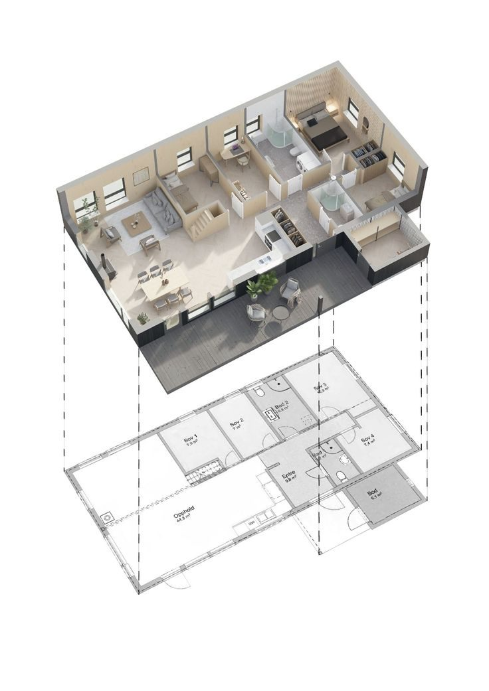
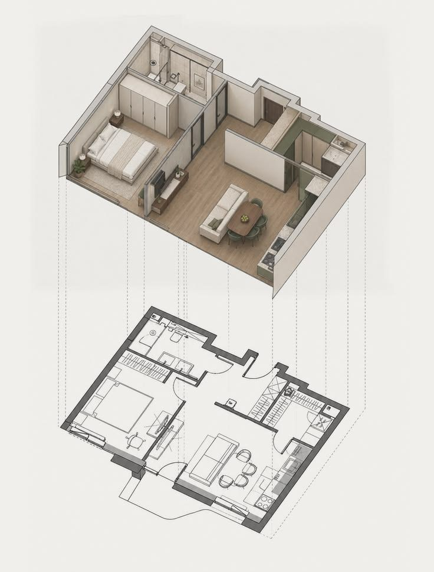
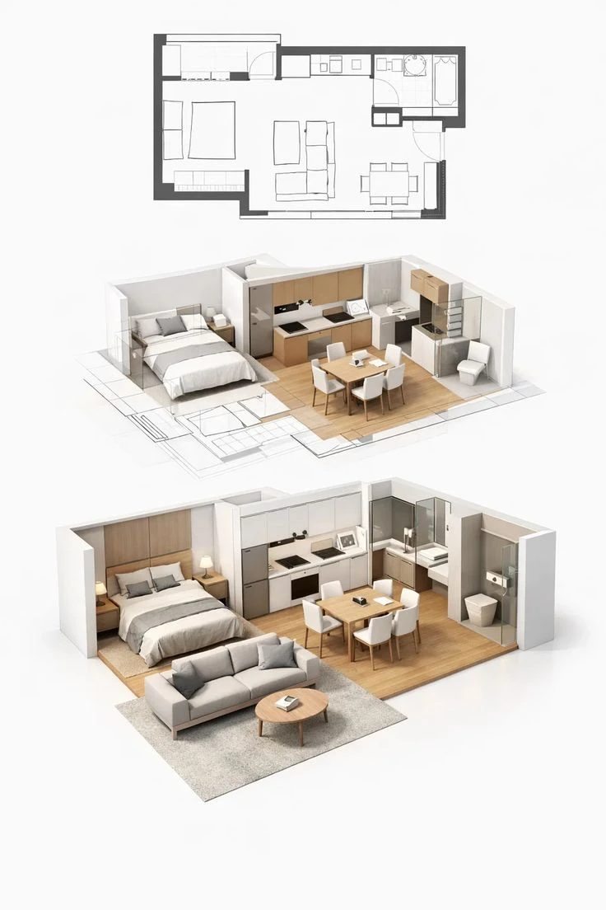
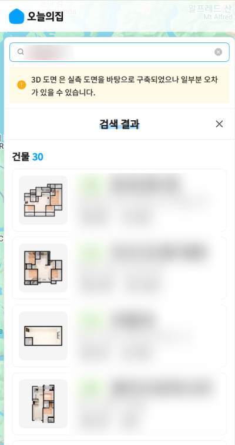
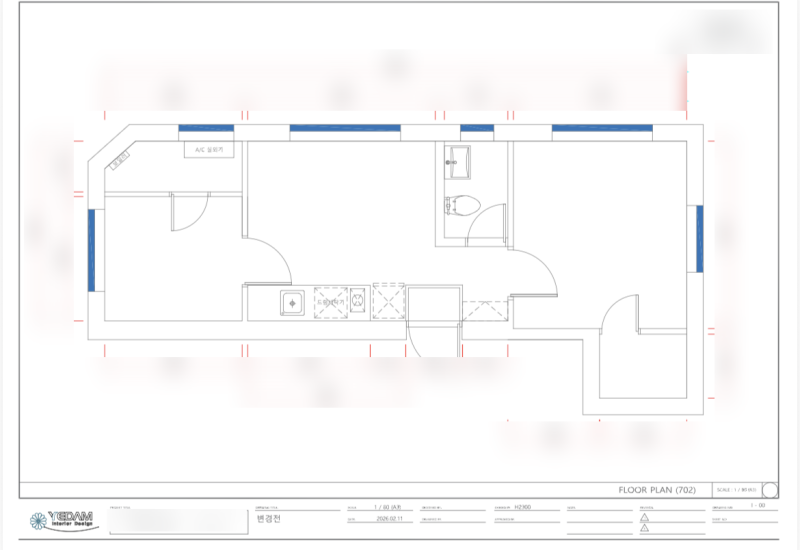
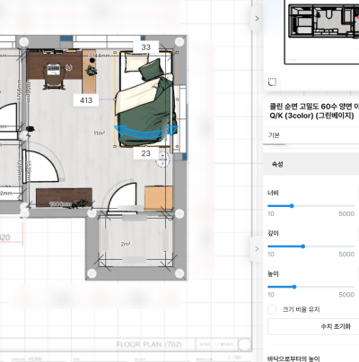
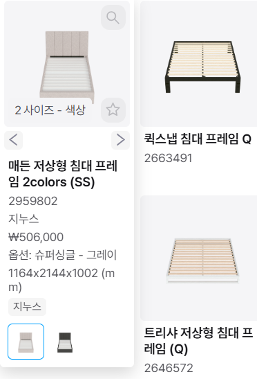
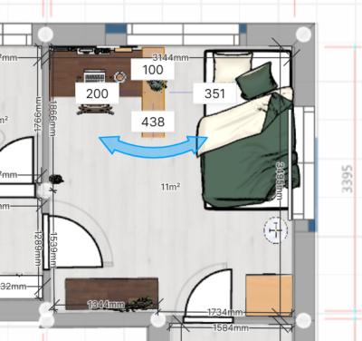
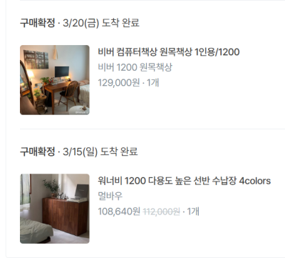

서비스 분석
도면이 있어 운이 좋았던 이사
평면도 조회가 안 되는 집에서 가구를 고르며 알게 된 것
3줄 요약
- 서울에서 이사하면서, 아버지가 만들어준 도면으로 가구를 3D에 놓아보고 샀어요.
- 오늘의집에는 평면도 조회 기능이 있는데요, 제가 이사한 집은 조회가 안 됐어요.
- 조회가 안 되는 집의 치수를 얻고, 생활 간섭까지 미리 보는 일이 플랫폼의 다음 과제라고 생각해요.
도면이 있었던 이사
서울에서 이사할 때 가구를 사려고 했어요. 아버지가 만들어준 도면으로 오늘의집 3D 인테리어에 넣어서 가구도 배치해봤어요. 사이즈로 먼저 거르고, 마지막엔 결국 가격이 중요했어요. 책상, 수납장 등을 사는 데에 성공했답니다.



기능은 있는데, 쓰려면 뭐가 필요할까요
오늘의집에는 아파트 평면도를 조회해서 도면을 불러오면 2D, 3D가 자동으로 만들어지는 기능이 있어요. 그런데 제가 확인해보니 전국의 모든 집이 되는 건 아니었어요.
제가 이사한 집도 조회가 안 됐어요. 아버지가 직접 재서 만들어준 도면이 있어서 쓸 수 있었던 거예요. 운이 좋았어요.
가구를 사기 전에 걸리는 벽은 세 가지예요.
- 첫째, 예산이에요. 저는 학생이라 가장 큰 이유예요.
- 둘째, 오래 살 집이 아니에요.
- 셋째, 내 방에 맞는지 알기 어려워요. 평면도가 조회되지 않으면 치수를 직접 재야 해요.
앞의 둘은 서비스가 바꾸기 어렵지만, 셋째는 서비스가 도울 수 있어요.
도면부터 구매까지
-
먼저 오늘의집 평면도 조회에서 우리 집이 나오는지 찾아봐요.
안 나오면 방의 가로, 세로, 높이를 직접 재서 메모해요. 이게 시작점이 돼요.


제 집은 도면을 불러올 수 없어서 실측해서 도면을 만들었습니다. -
사고 싶은 가구의 길이와 폭을 숫자로 적어요.
방 치수와 나란히 놓고 비교해요. 저도 길이나 폭이 안 맞아서 포기한 가구가 있었어요.


도면을 토대로 가구를 배치해요. -
3D나 AR로 한 번 놓아본 다음, 마지막은 예산으로 정해요.
저도 마지막엔 가격이 우선이었어요.


3D로 놓아본 배치와 실제로 산 책상, 수납장.
치수만으로는 남는 질문
평면도 조회가 안 되는 집은 대부분 원룸, 빌라, 오피스텔이고, 여기에 사는 사람은 저 같은 학생이나 1인 가구예요. 출장 실측은 인건비 때문에 1인 가구의 예산에 맞지 않아요. 앱에 가로·세로를 입력하는 방법도 한계가 있어요. 우리 방은 네모반듯하지 않고, 기둥이나 문지방 같은 변수가 많거든요.
그리고 1인 가구에게는 가구가 들어가느냐보다, 넣고 나서 생기는 생활 간섭이 더 커요. 방이 좁아 보이는지, 콘센트를 막는지, 문이 열리는지요. 저도 3D로 놓아볼 때 문이 열리는 방향과 책상 옆 통로 폭을 가장 오래 봤어요.
결론
오늘의집은 평면도가 조회되는 아파트에는 2D, 3D를 자동으로 만들어줘요. 하지만 조회가 안 되는 집은 치수를 직접 구해야 하고, 거기서 막히기 쉬워요. 저는 3D로 놓아본 뒤에 구매까지 갔어요. 그래서 조회가 안 되는 집의 치수를 쉽게 얻게 돕고, 그 치수로 생활 간섭까지 미리 보여 주는 일이, 둘러만 보던 사람을 구매까지 데려가는 다음 과제라고 생각해요.